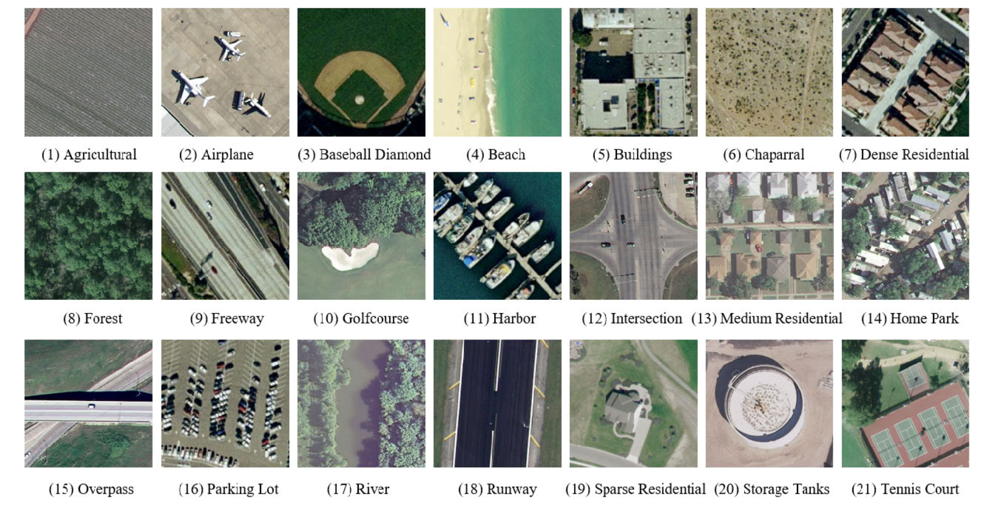
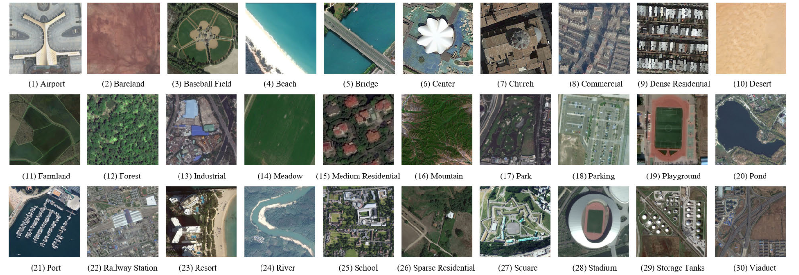
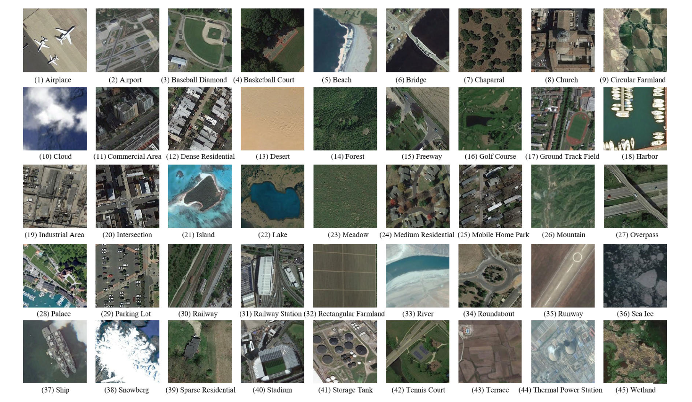
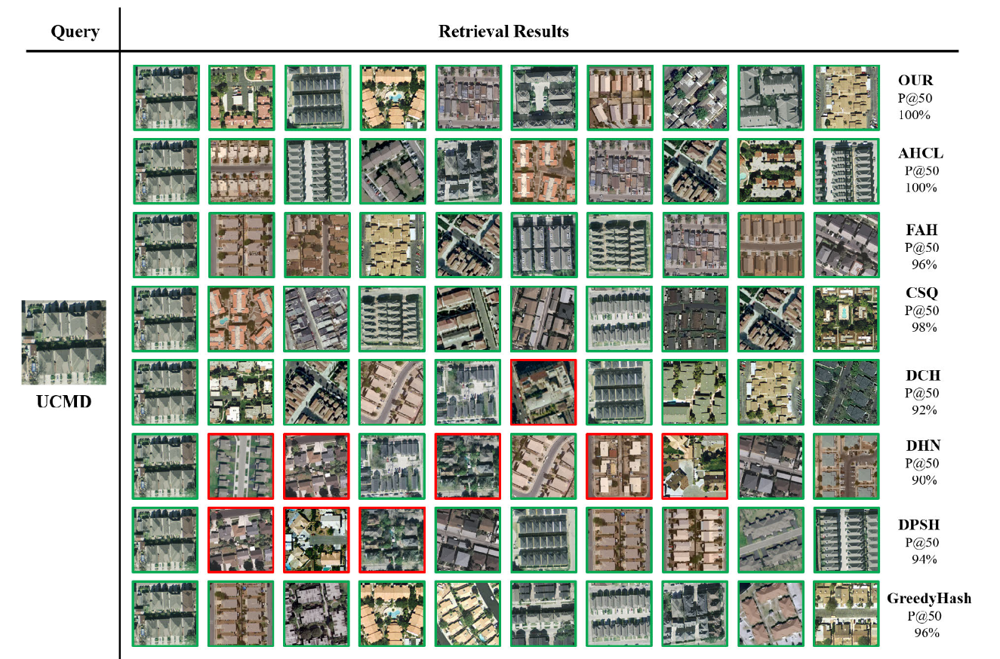

Abstract
With the rapid development of remote sensing sensor technology, the number of remote sensing images (RSIs) has exploded. How to effectively retrieve and manage this massive data have become an urgent problem. At present, content-based image retrieval (CBIR) methods have become a mainstream method due to their excellent performance. However, most of the existing retrieval methods only consider the global features of images, which lacks the ability to discriminate images with the same semantic information but different visual representations. To alleviate this issue, supervised contrastive learning based on the fusion of global and local features method is proposed in this article, named SCFR. First, a fusion module is designed to combine global and local features to enhance the ability of image expression. Second, supervised contrastive learning is introduced into the retrieval task to effectively improve the feature distribution, so that the positive sample pairs are close to each other, and the negative sample pairs are far away from each other in the feature space. Furthermore, to make the distribution of features of the same class more compact, the center contrastive loss is added to the constraints and combines the class centers that change iteratively with the network. Experimental results on three RSI datasets show that our proposed method has a more effective retrieval performance than the state-of-the-art methods.
Paper & Code & Demo
Experimental Results
Table 1. MAP VALUE UNDER DIFFERENT BITS ON DIFFERENT DATASETS.

Result Visualization
-

Figure 1. Examples of UCMD dataset.
Figure 2. Examples of AID dataset.
Figure 3. Examples of NWPU dataset.
Figure 4. Query example with the top-10 retrieved images and Precision@50 on the UCMD dataset.
Citation
@ARTICLE{10127603,
author={Huang, Mengluan and Dong, Le and Dong, Weisheng and Shi, Guangming},
journal={IEEE Transactions on Geoscience and Remote Sensing},
title={Supervised Contrastive Learning Based on Fusion of Global and Local Features for Remote Sensing Image Retrieval},
year={2023},
volume={61},
number={},
pages={1-13},
doi={10.1109/TGRS.2023.3275644}
}
Concat
Mengluan Huang , Email: lhuang@stu.xidian.edu.cn
Le Dong , Email: dongle@xidian.edu.cn
Weisheng Dong, Email: wsdong@mail.xidian.edu.cn
Guangming Shi, Email: gmshi@xidian.edu.cn